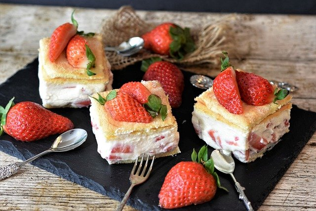

Strawberry Cake

Description
A sweet and light cake decorated with strawberries.
Ingredients
- cooking spray
- 1 ¼ cups white sugar, divided
- 1 stick unsalted butter, room temperature
- 2 large eggs
- 1 teaspoon vanilla extract
- 1 ⅓ cups all-purpose flour
- 1 ¼ teaspoons baking powder
- ¼ teaspoon salt
- ½ cup sour cream
- 1 (16 ounce) package fresh strawberries, stemmed and halved
Steps
-
Preheat the oven to 350 degrees F (175 degrees C).
Spray an 8-inch round cake pan with cooking spray.
-
Whip together 1 cup sugar and butter using an electric mixer in a mixing bowl until pale and fluffy,
5 to 7 minutes. Add eggs one at a time, beating well after each addition.
Beat in vanilla extract.
-
Whisk together flour, baking powder, and salt in a medium bowl.
Add flour mixture to butter mixture alternately with sour cream,
beginning and ending with flour mixture, and beating just until combined after each addition.
Fold in strawberries.
-
Spread batter into the prepared cake pan.
Sprinkle remaining 1/4 cup sugar evenly over the top.
-
Bake in the preheated oven until a toothpick inserted into the center comes out clean, 40 to 50 minutes.
Let cool completely on a wire rack.